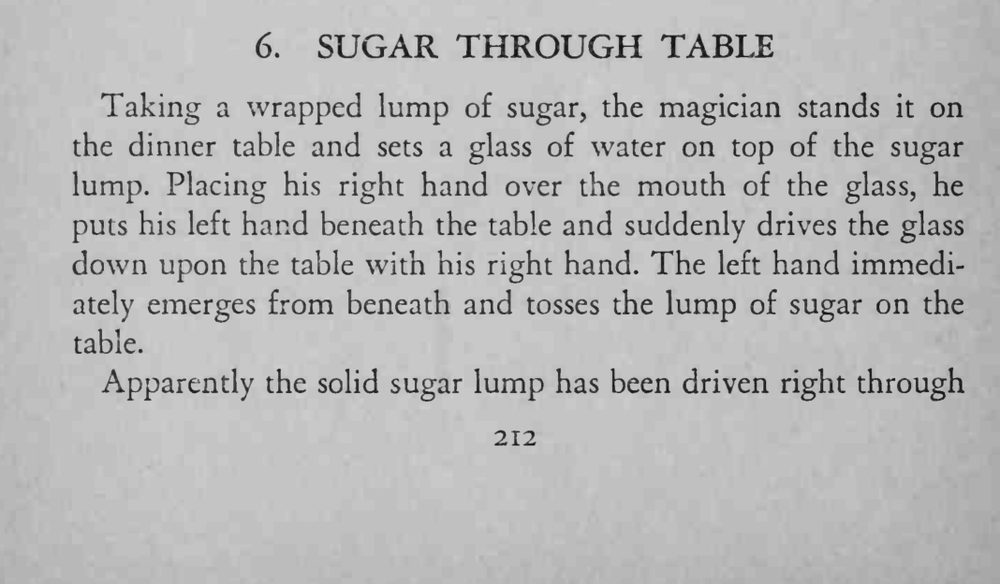
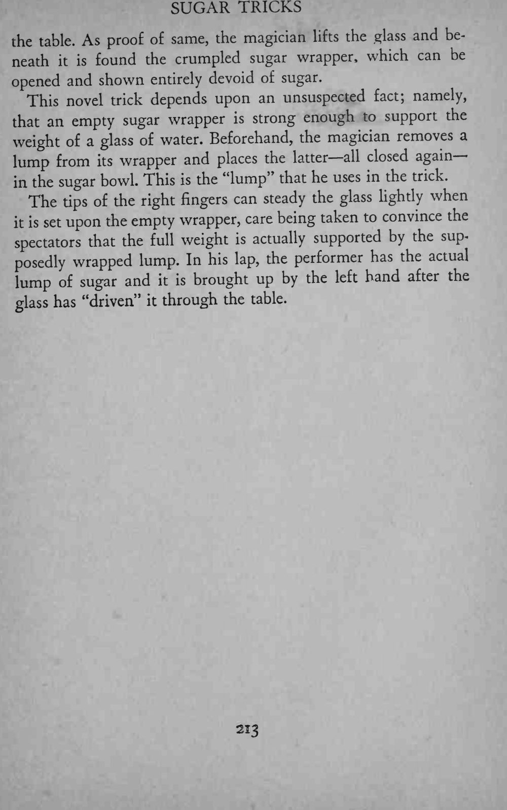
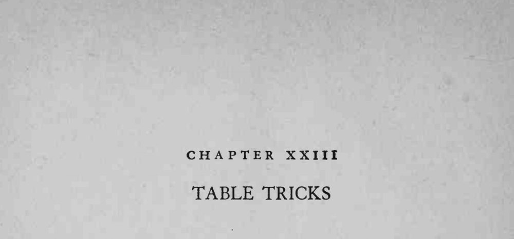

一杯水压着方糖，魔术师往下一压，糖块竟像穿过桌面一样消失，杯下只剩一团空糖纸。
空糖纸足以托住一杯水，放杯时右手手指轻轻扶稳，让观众相信重量全压在糖块上。



Taking a wrapped lump of sugar, the magician stands it on the dinner table and sets a glass of water on top of the sugar lump. Placing his right hand over the mouth of the glass, he puts his left hand beneath the table and suddenly drives the glass down upon the table with his right hand. The left hand immediately emerges from beneath and tosses the lump of sugar on the table. Apparently the solid sugar lump has been driven right through the table. As proof of same, the magician lifts the glass and beneath found the crumpled sugar wrapper, which can be it is opened and shown entirely devoid of sugar. This novel trick depends upon an unsuspected fact; namely, that an empty sugar wrapper is strong enough to support the weight of a glass of water. Beforehand, the magician removes a lump from wrapper and places the latter— all closed again— its in the sugar bowl. This is the "lump" that he uses in the trick. The tips of the right fingers can steady the glass lightly when upon the empty wrapper, care being taken to convince the it is set spectators that the full weight is actually supported by the sup* posedly wrapped lump. In his lap, the performer has the actual lump of sugar and it is brought up by the left hand after the glass has "driven" it through the table.